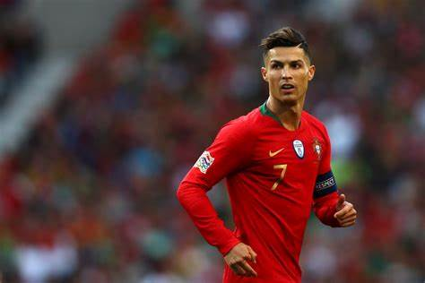
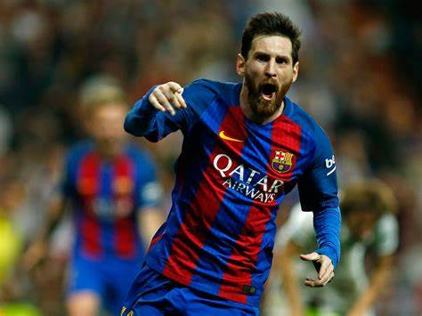
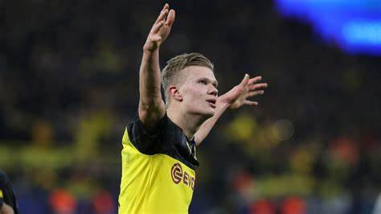
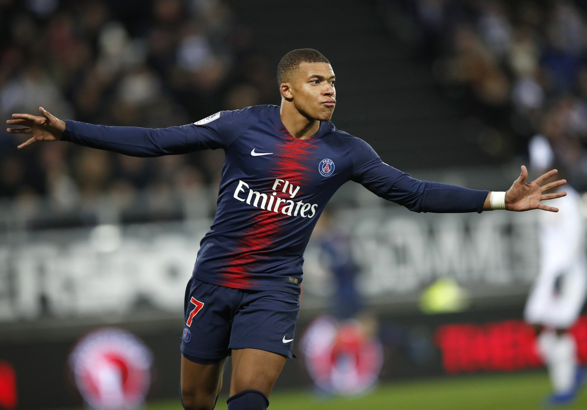

|
Origame designs
Origami instructions and diagrams
Intresting Facts about camel
About us Follow us

1 -Cristiano Ronaldo scored in every minute of the game: The first player to achieve this feat before Messi. The history making goal came against the rival Atletico in the 17th minute penalty opener..
2 - Most UEFA Team of the Year appearances: 8 times.

1 -Most hat-tricks in La Liga: 36 hat-tricks.
2 -Guinness World Records title for the most official goals in a calendar year: 91 goals (2012).

1 -Quickest player ever to score ten Champions League goal for a club.
2 -First Dortmund player to score on Champions League, Bundesliga and DFB-Pokal Cup debut.

1 - There, Mbappé won three Ligue 1 titles, two Coupe de France titles, was named Ligue 1 Player of the Year, and has finished as Ligue 1 top scorer twice.
2 -Ligue 1 Young Player of the Year, and the Golden Boy award. In 2017.